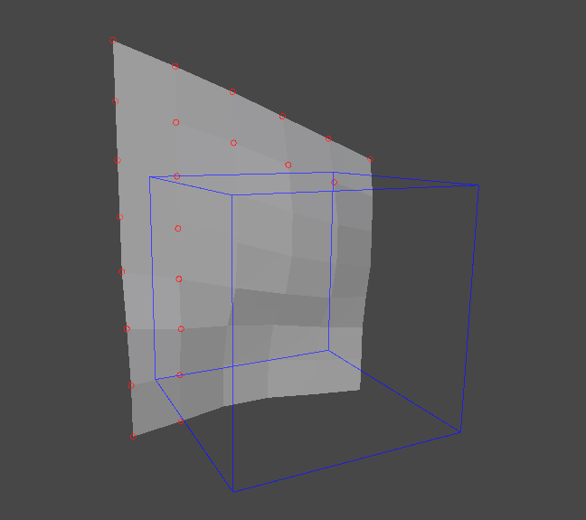
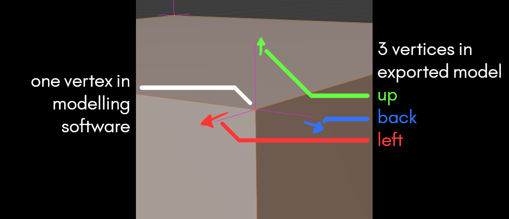

Outside of Bounds
Meshes that extend out of the module dimensions described in your Tileset Importer asset cause Wildtile to misinterpret insideness and face connectivity.
Which Problems Are Identified?
If a module does not connect to other modules as it should or has an unexpected corner insideness, use this inspector to check if the module also has vertices outside of the mesh bounds.
How To Use This Inspector To Solve The Problem?
Set Inspection Mode to Outside of Bounds. The scene view will highlight any vertices that are out of bounds with red circles in the scene view.
)
Some vertices are outside the module bounds, but they do not have red circles
These vertices are still illegal.
If there are a very large number of vertices out of bounds then some circles may be hidden to improve editor performance. As you remove the visible out of bounds vertices, Wildtile will start showing the other vertices.
All out of bounds vertices are always shown in the list in the Tileset Inspector panel.
You can see the list of out of bounds vertices in a list in the Tileset Inspector. Clicking on a vertex will highlight the vertex with a white circle in the scene view instead of red. Double clicking a vertex in this list will zoom the scene view camera to that vertex.
Some vertices in the list highlight the same vertex in the scene view
When modelling software exports meshes they split vertices that aren't exactly identical on different faces. For example, a cube cannot share vertices between the top face and the side face - even though they share positions they have different normals.
Wildtile lists all vertices, even if they are generated from a single vertex in your modelling software.
